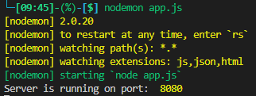
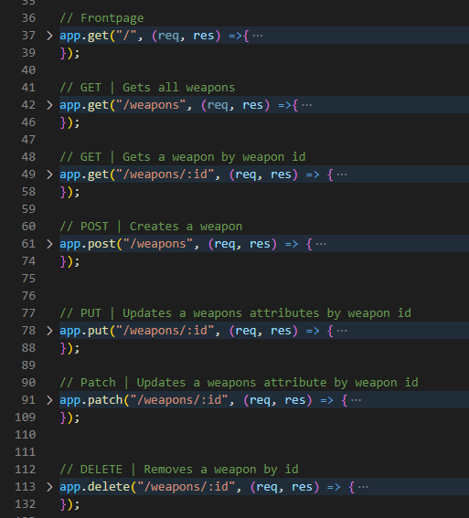

Intro to the course. Information about the mandatories / exam. Expectations.
Github linkNode.js is a way to use javaScript in backend and is open source.
We normaly see that javaScript runs in a browser on clientside and not backend.
Im using express for node.
Express is a node.js web applikation framework that give many tools to develop with.
First we need to make a package.json file and give it dependencies that we wanna use.
Then we create a file app.js, that file is where the server starts.
When we have a package.json and an app.js files then we can run a command in the terminal: 'npm i' or 'npm install'.
Now npm (node package maneger) will install the dependencies from package.json
We have to restart the server ourselves everytime there is a chance. But we can use a tool called nodemon.
To install nodemon run the command: 'npm install -g nodemon'.
Then we run the command: 'nodemon app.js' instead of 'node app.js'.
Then we make some code in the app.js file.
If we use modules then we imports the express else we use nodes require function
A variable is a “named storage” for data. We can use variables to store goodies, visitors, and other data.
To create a variable in JavaScript, use the let keyword if we want to chance the value, else we can use const to make it not chanceable.
let is used for varibles that need to be chanced later on
const is used for varibles that does not need to be chanced later on
var was used before let and const. There fore is var not used so much more.
The conventions is a followed
Written in plural
Need to listed in this order: GET, POST, PUT, PATCH, DELETE
